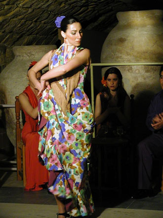

|  | Honorable Mention Úbeda, Spain On a very special evening during our study trip to Spain we were treated to a wonderful buffet and evening of Andalucian music and flamenco in the cellar of a building that had been the “tithe house” where the tithes of wine, olive oil, and other produce were stored. (Note the large earthen vessels in the background.) The music from this area “is derived from gypsy and Arab sources and is truly an expression of the Andalucian soul.” Menchu and her companions demonstrated many of the different styles of flamenco dance and song, and afterwards invited the group to learn a few simple steps. The photo reminded us of the style of Rembrandt and other painters of that era where the subject is highlighted and the background and other figures are in the shadows. (Quote taken from the information provided by Alumni Campus Abroad) |